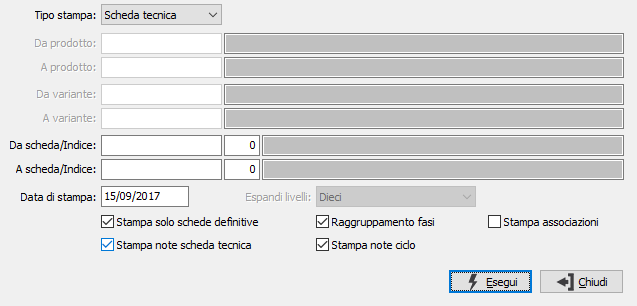

Stampa scheda tecnica
La funzione consente sia la stampa della scheda tecnica, che la stampa della scheda tecnica prodotto espansa, che l'elenco delle associazioni degli articoli.

In base al parametro Tipo stampa si seleziona la tipologia di stampa desiderata e si attivano i limiti di selezione e le opzioni di stampa relative; tutti i dati vengono stampati in relazione alla data di stampa, di conseguenza schede tecniche valide alla data, schede prodotto valide alla data ed associazioni prodotti valide alla data. Nel caso si richieda la stampa della scheda tecnica del prodotto si potrà selezionare, attraverso la casella Espandi livelli, fino a quale livello della scheda tecnica si deve effettuare l'elaborazione (ad esempio potrebbe essere stampato solo il primo livello). In caso di stampa della scheda tecnica è possibile stampare solo le schede definitive, stampare la scheda raggruppando i componenti per fase o inserire al termine della stampa della singola scheda le associazioni attive con i prodotti, stampare le note della scheda e le note del ciclo apportando le spunte alle relative caselle.